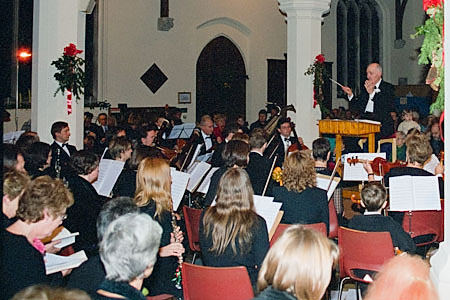

St Neots Sinfonia
We are the community orchestra of St Neots serving the area of South-West Cambridgeshire and Eastern Bedfordshire. We were founded in 1989 with the mission to enable local musicians to have fun playing in an orchestra and to perform public concerts of popular works several times a year for local music lovers.
Our conductor is Reginald Searle, who graduated from the Royal School of Music in 1963. He has now retired and this has allowed him to concentrate on writing more music. St Neots Sinfonia has premiered several of his works.
Public Concerts
We perform public concerts, generally five times a year. Typically two of the concerts are orchestral concerts, three are concerts in partnership with the St Neots Choral Society which includes a family Christmas concert.
We generally perform well known popular classical works, but try to include one new or unusual piece in each concert.